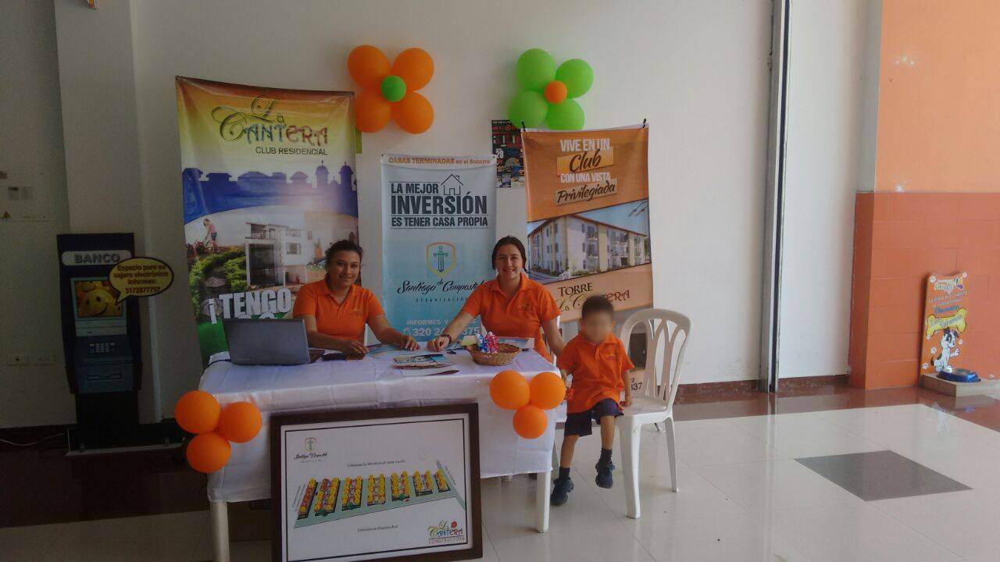
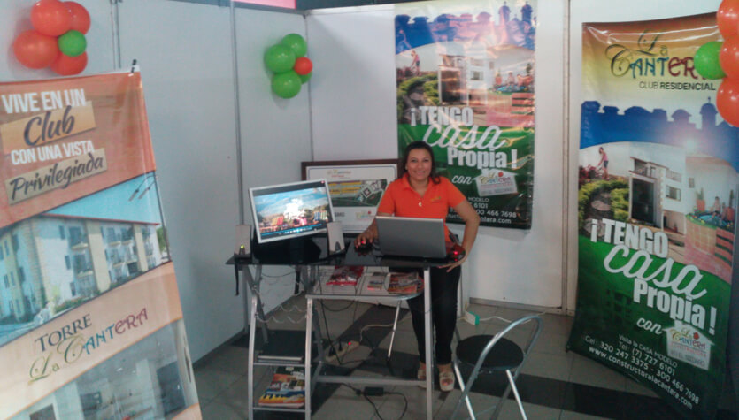
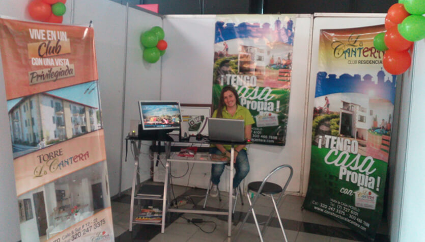

INVERSIONES LA CANTERA S.A.S.
Es una empresa dedicada a la construcción de bienes inmuebles con Arquitectura Bioclimática y eco ambiental, que nace en el Socorro – Santander el 04 de Enero de 2011, por la decisión de dos jóvenes innovadores con ganas de crear un espacio para generar empleo, servir y cumplir sus sueños.
NUESTRO PROYECTO
Nuestro primer proyecto ubicado en la zona de expansión y mayor valorización de la Ciudad del Socorro Santander en el año de 2012 el cual es un Conjunto Residencial llamado
LA CANTERA CLUB HOUSE, Conformado por sesenta y un (61) casa campestres y Veintinueve (29) apartamentos, su zona social consta de piscina con playa para adultos, piscina para niños, jacuzzi, sauna y turco, salón social, gimnasio, golfito, parque infantil, canchas de: Tenis, múltiple, miradores ,Kioscos, BBQ, amplias zonas verdes, ecosendero, parqueaderos para residentes y visitantes.
PARTICIPACIONES EN FERIAS
Conservando los lineamientos y objetivos de nuestra VISION, es nuestro constante interés ser reconocidos en nuestro sector pero más aún ser la opción para nuestros clientes en la adquisición de su próxima vivienda, por tal motivo CONSTRUCTORA LA CANTERA ha participado en eventos y ferias inmobiliarias donde tenemos la oportunidad de tener un contacto directo y personalizado con ustedes para así llevarles la información completa de nuestros proyectos, puedan conocer más a fondo quienes somos y ayudarlos en la elección de la solución inmobiliaria que va de acuerdo a sus necesidades.
Para nosotros siempre es un placer atender las solicitudes e inquietudes de nuestros clientes y personas interesadas asi que te invitamos a que nos
Contactes para poder darte la informacion que necesitas.

2015 SAN GIL PLAZA CENTRO COMERCIAL

2016 NEOMUNO BUCARAMANGA

2016 NEOMUNO BUCARAMANGA
Anterior
Siguiente